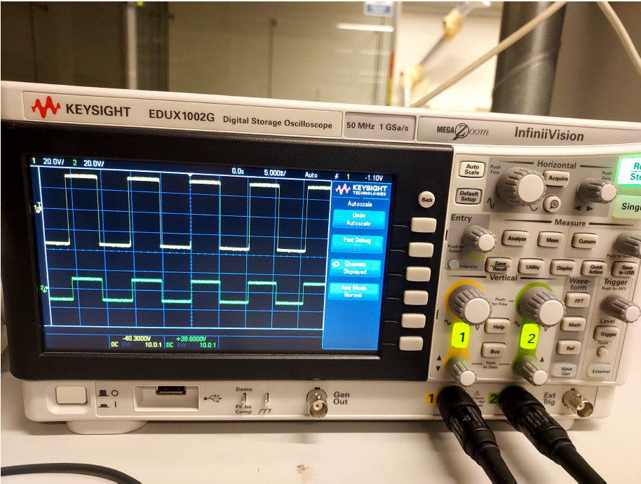
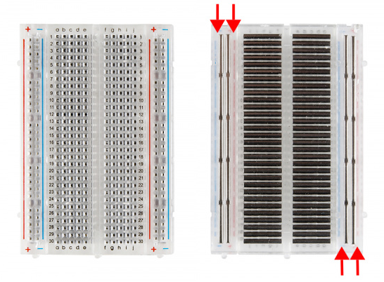
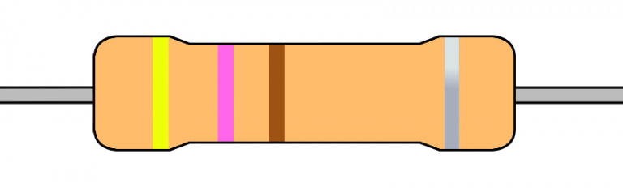

Chapter 12 Equipment
You will be provided with almost the same equipment you had in the virtual experiment. However, this time, instead of a battery you have a function generator and instead of the volt- or ammeter you have an oscilloscope to show your output.
12.1 Function generator
The function generator is going to be your voltage source, like the battery in the virtual experiment. It is essentially an adjustable power source and can deliver constant current like the battery in the simulation did, but also alternating currents (which we will not use in this exercise). In the image below you can see that there are two knobs, one for frequency and one for amplitude. Additionally there are several buttons to choose the shape of the alternating current it can create (sinusoidal function, square wave function, etc).

The cable connected to the generator is split into two, and you will be able to connect the two ends of the cable to your + and - lines of the breadboard. It is always a good idea to switch off or disconnect the generator when you are building a circuit, and turn it on when the circuit is all set.
12.2 Oscilloscope
The oscilloscope allows you to measure the voltage and current in your circuit and visualizes it on the small screen. By connecting two cables, you can generate two plots and compare voltage at different points of the circuit. The oscilloscope has two probes that can be connected to the circuit.
ATTENTION: The probes are expensive and delicate, so please treat them carefully.

HINT: The voltage probes of the oscilloscope are single ended probes, while the probes in the simulation where differential probes. For differential probes, the voltage is measured as the difference between the red and the black probe. for the single ended probes the second measurement point is the ground of the system, so it is said to “measure against zero”.
12.3 Breadboard
The Breadboard is the small plastic rectangle with the holes. This is your playground to build an electrical circuit.

This tutorial explains breadboards and why they are called that: https://learn.sparkfun.com/tutorials/how-to-use-a-breadboard/all
And this short video also introduces them nicely: https://www.youtube.com/watch?v=6WReFkfrUIk
All holes the possible positions to place electrical connections like wires or resistors and many more.
The important bit is tha the various positions in the breadboards have some hidden electrical connections behind them (as you can see on the imaage above):
The two long sides (left and right) have two vertical lines, one is labeled as negative the other as positive. All the positions along these two lines are electrically connected. The + and - lines are meant to be connected to the + and - outlets of the function generator.
The 5 positions along the same horizontal line (indicated by a number) and on the same side, left or right, are also connected. However, the left and right side are NOT connected to each other. These horizontal lines are also not connected to the + and - vertical lines on the side.
If you are in doubt, check this figure, which shows the connected points:

https://magpi.raspberrypi.com/articles/breadboard-tutorial
Note: it is normal to be a bit confused by the breadboard! It does not look like the schematic of the circuit you have seen so far. But you will see, it is actually the same thing.
12.4 Electrical components
You are given the following electrical components:
• Resistors: these are the components with the two thin metal rods and thicker blue part in the middle. The blue part has some stripes with different colors. They tell you how big the resistor is. Here you can find the color code to interpret the colors.


https://hyperelectronic.net/wiki/resistor/resistor-color-code/
• LED lights. Their brightness depends on how much current circulates. The more the current, the brighter the light. They will be your readout for current. • Wires. Each wire has an exposed metal pin at the two ends. Make sure that the metal pin is well inserted in the breadboard holes. • Switch buttons. If you like, you can add a on/off switch button to your circuit, but it is not required. • Capacitors. These are the small cylinders with the two metal legs. Their value is written on the component.